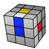
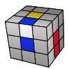
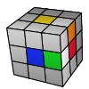
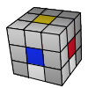

Introduction
The CFOP method average number of moves for a complete solution is ~56 moves. While using the beginner's method, the average number of moves is roughly around 110 moves. (100% more moves!) All top ranking speedcubers today use the CFOP method (sometimes with additional variations to it). Mastering the speedsolving method requires learning some new algorithms and practice, and takes a bit longer than the beginner's method. However since fully mastered it will enable you to speedsolve the Rubik's cube much faster, and basically from there only practice is what stands between you and sub 30/20/10 solving time, and the world record!
- First of all we have to solve the white edge pieces in the bottom. This seems to be the easiest but it's really hard if you want to do it right. You should be able to determine all the rotations needed to complete the white cross after inspecting the cube, and you'll succeed only if you foresee 7 steps.
- When the cross is done we solve the first two layers (F2L) in one step using a technique to pair the white corner and second layer edge pieces. We are talking about four corner blocks which usually require 4x7 steps.
- Orienting the last layer (OLL) of the Rubik's Cube is the step in which we solve the yellow face without matching the side colours. We are going to position them in the next step. Learn all the 57 algorithms to complete this step
- Permutate the last layer (PLL) to finish the solution of your cube. There are 21 algorithms to memorize.
Solution
The examples below show a couple situations you can meet. The first one is very easy, you just have to turn the edge piece to the correct position. The second shows how to reorient a piece. The third example demonstrates how to place two pieces in one step. The last step shows the steps to fix the Superflip (the "most scrambled Rubik's Cube") in only 6 moves.
   This first step of solving the white cross is actually an intuitive stage of the solution process. We couldn't even cover every possible situations because at this stage there are so many cases. Almost everyone could get this far without learning algorithms. But you'll need to practice forming the white cross to make it efficient. Do it smoothly, without stopping and with the cross facing downwards. If this works well, you can proceed in our tutorial to the second step: F2L
Conclusion
Congratulations! You now know how to speedsolve the Rubik's cube using the CFOP method. With enough practice, you can easily achieve sub 1 minute when solving the cube. Always remember that the key factors for speedcubing are looking ahead, good algorithms, efficient solving, and fast turning. I hope you something with this guide. Happy cubing!